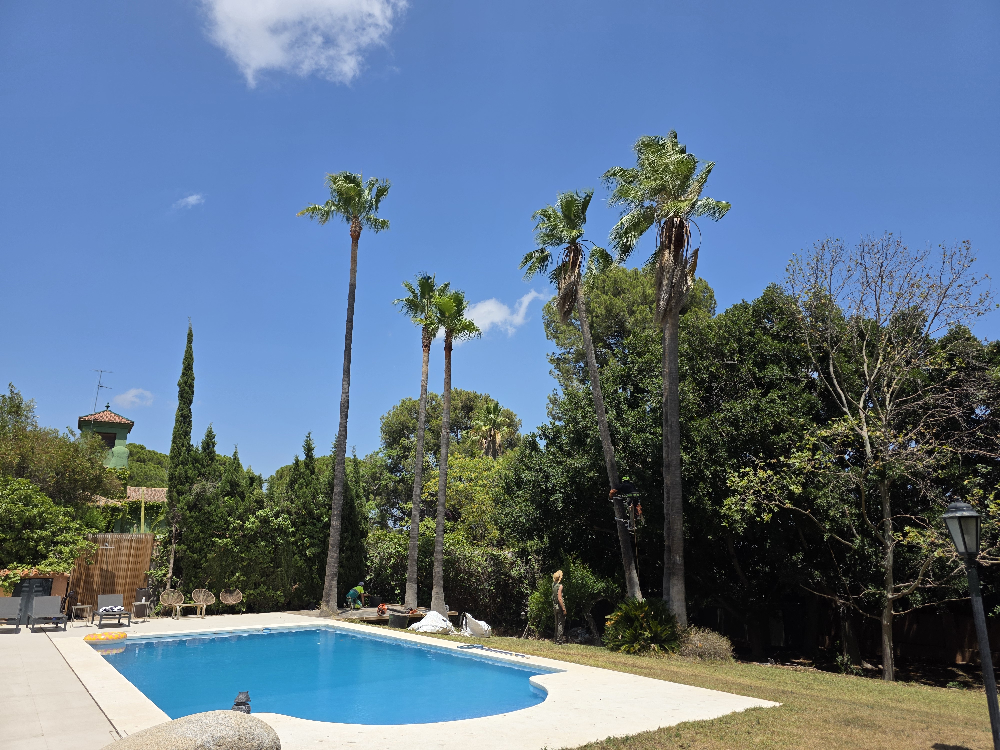
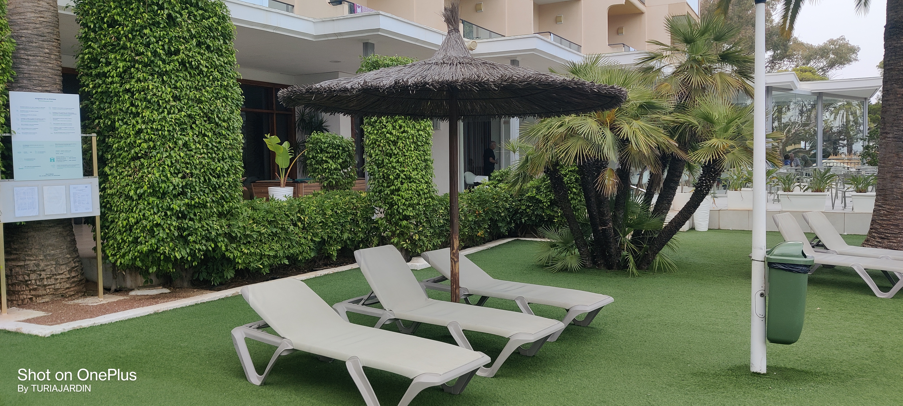
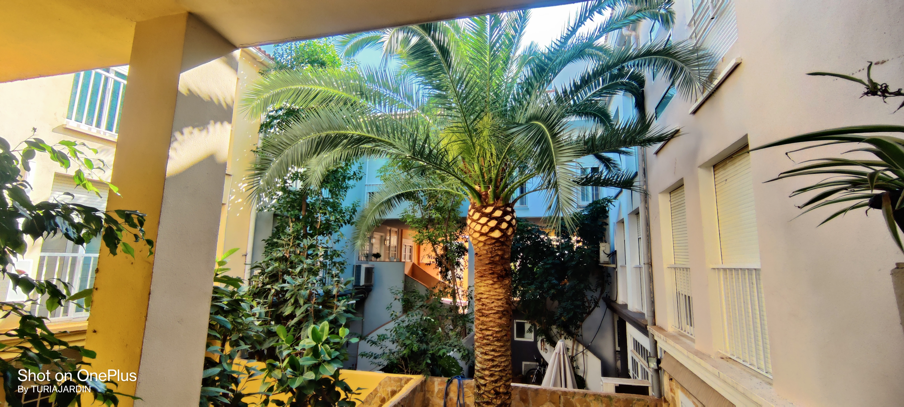
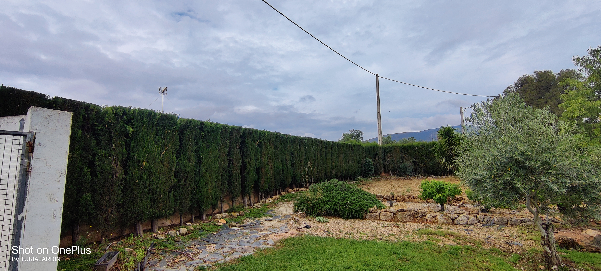

Más de 12 años cuidando el patrimonio verde de Valencia. Poda, endoterapia y adecuación de áreas verdes.
Expertos en el cuidado de palmeras y jardines
En Turia Jardín combinamos técnicas tradicionales y tratamientos biológicos. Nuestra especialidad es la poda de palmeras, abarcamos todas las necesidades de tu área verde.
Poda de palmeras
Especialistas en datileras, canarias y washingtonias.
Poda de árboles
Altura, formación, frutales y ramas secas.
Tratamientos fitosanitarios
Control de plagas con productos ecológicos.
Endoterapia
Tratamiento interno para palmeras.
Adecuación áreas verdes
Acondicionamiento de parques y jardines.

🌴 Poda de palmeras
Podas anuales y limpieza de palmeras datileras, canarias, washingtonias. Eliminamos hojas secas y racimos con equipos de altura.

🌳 Poda de árboles
Poda de formación, limpieza, reducción de copa y frutales. Trabajamos con trepa y plataformas elevadoras.

🐛 Tratamientos fitosanitarios
Diagnóstico y tratamiento de plagas: cochinilla, pulgón, picudo rojo y hongos. Productos respetuosos.

💉 Endoterapia
Inyección directa al sistema vascular. Ideal para combatir el picudo rojo sin contaminar el entorno.

🏞️ Adecuación áreas verdes
Acondicionamos parques, rotondas, jardines comunitarios. Limpieza, nivelación, siembra y diseño sostenible.
Transformaciones reales


Endoterapia contra picudo rojo
Nuestra trayectoria
Palmeras podadas
Años de experiencia
Clientes satisfechos
Lo que dicen nuestros clientes
"La poda de las palmeras de mi urbanización quedó impecable. Muy profesionales."
— Administrador de fincas, Valencia
"Aplicaron endoterapia a mis palmeras datileras y solucionaron el picudo."
— Vicente M., Godella
"Realizaron la adecuación de todo el jardín comunitario. Espectacular."
— Comunidad de vecinos, Moncada
Proyectos reales




Preguntas frecuentes
Solicita presupuesto sin compromiso
¿Tienes palmeras que necesitan cuidados?
Somos especialistas en poda y endoterapia. Solicita una visita técnica.